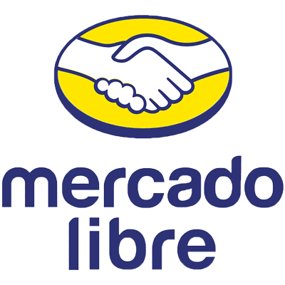

Contribuí al desarrollo y mantenimiento de aplicaciones móviles utilizando React Native.
Integré APIs para enriquecer la funcionalidad de las aplicaciones móviles y mejorar la interacción del usuario.
Participé en la optimización del rendimiento de las aplicaciones, logrando una mayor fluidez y mejor experiencia de usuario.
Colaboré con el equipo de diseño para asegurar la implementación de interfaces intuitivas y visualmente atractivas para iOS.
Desarrollador Frontend en MercadoLibre

MercadoLibre (2024 - Actualidad)
Ubicación: Rafaela, Argentina
Desarrollé y optimicé interfaces de usuario con React.js, mejorando la experiencia del usuario en la plataforma.
Implementé estrategias para reducir los tiempos de carga en un 5%, lo que mejoró el rendimiento general de la aplicación.
Trabajé en un entorno ágil con metodología Scrum.
Proyectos
Proyectos en los que participé en estos 2 años:
Plataforma Web de Reservas "ReserVite"
Descripción: Participé en el desarrollo una plataforma web de reservas para restaurantes utilizando React.js en el frontend y SQL Server en el backend.
Tecnologias aplicadas en el proyecto:React.js, JavaScript, HTML, SQL Server, Git, GitHub, Visual Studio Code.
Resultado:La página logró más de 1000 reservas en los primeros dos meses, únicamente en San Francisco.
Aplicación Mobile de Streaming de Podcasts "PodStream"
Descripción:permite a los usuarios descubrir, reproducir y suscribirse a una amplia variedad de podcasts.
Tecnologias aplicadas en el proyecto:React Native, JavaScript, SQL Server, Git, GitHub, Visual Studio Code.
Resultado hasta la actualidad:Es un proyecto relativamente nuevo, realizado de manera independiente con 5 integrantes más. Todavía seguimos desarrollándolo y esperamos lanzarla a la Google Play y a la App Store a finales de este año.